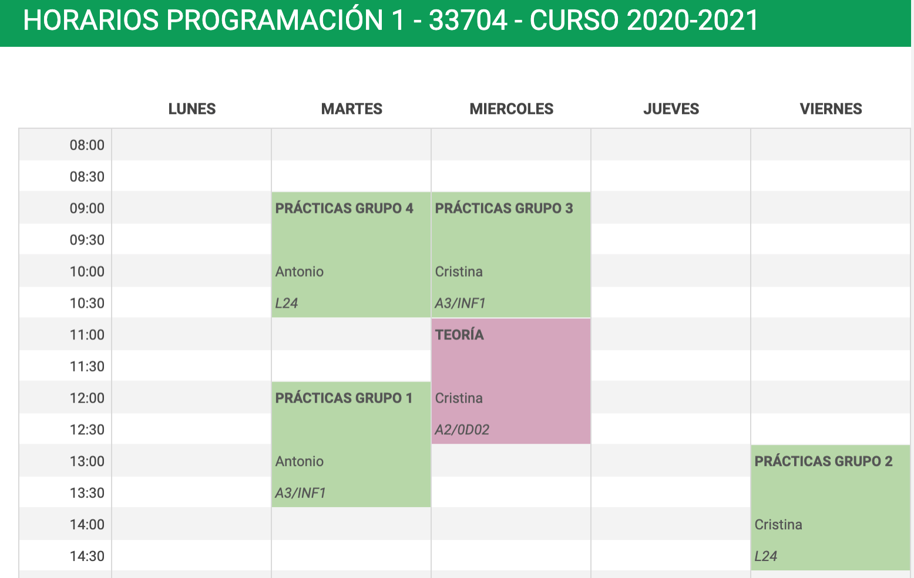
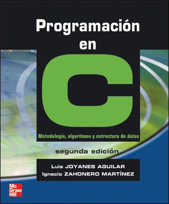
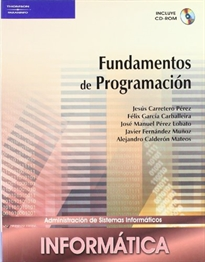
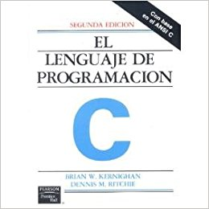
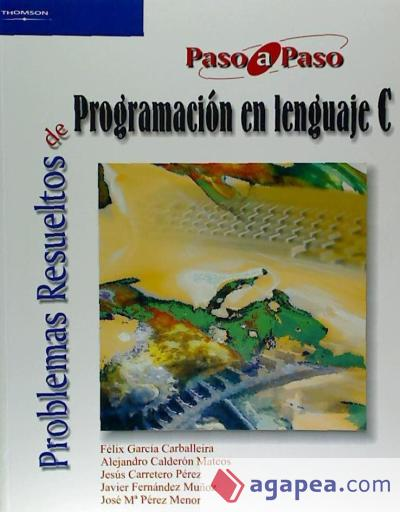

Descripción de la asignatura
Programación 1. Grado de Robótica. Curso 2019-2020¶
Toda la información está disponible en el sitio Moodle de P1 y en la ficha del campus virtual.
Datos académicos de la asignatura¶
Departamento de Ciencia de la Computación e Inteligencia Artificial
6 créditos ECTS: 1 clase de teoría de 2 h. y 1 clase de
prácticas de 2 h. a la semana
Profesores:
- Antonio Botía (e-mail): Grupos de prácticas: 2 y 3.
- Cristina Pomares (e-mail): Grupo de teoría: 1. Grupos de prácticas: 1 y 4.
Recursos de la asignatura¶
- Sitio Moodle contiene los apuntes, transparencias, prácticas y otros materiales docentes
- Foro de consultas y anuncios en el sitio Moodle
Objetivos y competencias¶
Objetivos:
- Dominar los principios de la programación procedural.
- Resolver problemas de programación básica aplicando adecuadamente los tipos de datos elementales, los tipos de datos estructurados y las estructuras de control.
- Asimilar el concepto programación modular y saber aplicarlo en la resolución de problemas.
- Conocer el concepto de recursividad, aplicándolo a problemas sencillos.
- Comprender el concepto de fichero y saber utilizarlos.
- Ser capaz de utilizar herramientas de programación para editar, compilar, ejecutar y verificar un programa.
- Analizar problemas susceptibles de resolución por un ordenador y diseñar algoritmos que los solucionen.
- Implementar algoritmos mediante técnicas de programación estructurada y modular.
- Saber realizar programas de ordenador que capturen y envíen información a un sistema robótico.
Competencias:
- Interpretar el funcionamiento del código fuente de un programa.
- Definir los tipos de datos necesarios para la representación de la información.
- Diseñar algoritmos y codificarlos con distintas técnicas de programación, especialmente en sistemas robóticos.
- Verificar el correcto funcionamiento de un programa.
Temario¶
-
Tema 1. Introducción a la programación: Representación de la información. Concepto de programa. Fases de desarrollo de un programa. El lenguaje C. Estructura de un programa. Comentarios en un programa. Entornos de programación.
-
Tema 2. Tipos de datos simples: Concepto de dato. Constantes y variables. Sentencias de asignación. Expresiones y operadores. Sentencias de entrada/salida de datos.
-
Tema 3. Sentencias de control: Algoritmos y programas. Estructura secuencial. Estructuras de selección. Estructuras de repetición.
-
Tema 4. Programación modular: Descomposición modular. Concepto de módulo. Comunicación entre módulos. Funciones. Parámetros actuales y formales. Paso de parámetros por valor y por referencia. Ámbito de una variable. Variables globales y locales. Efecto lateral. Funciones predefinidas
-
Tema 5. Tipos de datos estructurados: Arrays: Concepto de dato estructurado. El tipo array. Arrays unidimensionales, bidimensionales y multidimensionales. Cadenas de caracteres
-
Tema 6. Punteros y memoria dinámica: Memoria estática vs. dinámica. Creación, inicialización, asignación y liberación de memoria. Conversión de tipos.
-
Tema 7. Tipos de datos estructurados: Registros: Concepto de registro. Registros en C. Operaciones sobre registros. Arrays de registro
-
Tema 8. Entrada/salida: Declaración, apertura, lectura y escritura de ficheros de texto y binarios en C.
-
Tema 9. Recursión: Definición. Esquema básico. Codificación en C. Características
Prácticas¶
Durante las clases prácticas se realizarán de forma individual ejercicios de programación relacionados con los conceptos que se están estudiando en ese momento que servirán para reforzar y profundizar en las competencias de la asignatura.
Horarios¶
La distribución de grupos del curso 2019-20 es la siguiente:

Evaluación¶
Convocatoria normal (evaluación continua)
En la convocatoria ordinaria (enero) se realizará una evaluación continua con las siguientes pruebas:
- Examen 1: Del tema 1 al tema 3. Pondera un 15% en la nota final. No se exige nota mínima.
- Examen 2: Del tema 1 al tema 6. Pondera un 35% en la nota final. No se exige nota mínima.
- Examen 3: Del tema 1 al tema 9. Pondera un 50% en la nota final. No se exige nota mínima. Se realizará en la fecha oficial asignada al examen final de la convocatoria de enero.
Todos los exámenes de la asignatura se realizarán por escrito e incluirán conceptos y ejercicios relacionados con los trabajados tanto en las sesiones de teoría como de prácticas.
Las entregas de las prácticas no ponderarán para la calificación final, pero su realización es imprescindible para el aprendizaje de los conceptos, técnicas de la asignatura y para la preparación de las pruebas en las que se evaluarán los conocimientos adquiridos.
Convocatoria extraordinaria
En la convocatoria extraordinaria se realizará un examen final escrito sobre todos los bloques temáticos cuya calificación representará el 100% de la nota de la asignatura.
Plagios
Los trabajos teórico/prácticos realizados han de ser originales. La detección de copia o plagio supondrá la calificación de "0" en la prueba correspondiente. Se informará la dirección de Departamento y de la EPS sobre esta incidencia. La reiteración en la conducta en esta u otra asignatura conllevará la notificación al vicerrectorado correspondiente de las faltas cometidas para que estudien el caso y sancionen según la legislación (Reglamento de disciplina académica de los Centros oficiales de Enseñanza Superior y de Enseñanza Técnica dependientes del Ministerio de Educación Nacional BOE 12/10/1954).
Bibliografía¶
En Moodle se publican los apuntes de la asignatura, con ejercicios, explicaciones y ejemplos de todos los conceptos estudiados, tanto en teoría como en práctica.
Los apuntes de la asignatura se han confeccionado utilizando la siguiente bibliografía, que podéis utilizar para consultar o ampliar algunos conceptos:

- JOYANES, Luis; ZAHONERO, Ignacio. Programación en C. Metodología, algoritmos y estructuras de datos. McGraw-Hill, 2a edición, 2005. ISBN: 8448198441

- CARRETERO Pérez, Jesús. Fundamentos de programación. 2007. ISBN: 9788497325509

- KERNIGHAN, Brian W.; RITCHIE, Dennis M. El lenguaje de programación C. Pearson Educación, 1991. ISBN: 968-880-205-0

- Carballeira. Problemas resueltos de programación en lenguaje C
Programación 1, Grado de Robótica, curso 2019-20
© Departamento Ciencia de la Computación e Inteligencia Artificial, Universidad de Alicante
Cristina Pomares